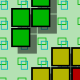
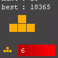
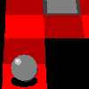
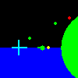

| Image | Name | Author | Description | Play |
|---|---|---|---|---|
|  | 4K-tris | pb33 | Now this is a great 4K version of tetris! The movement is smooth, there's a semi-animated background, and classic gameplay that seems to be flawless. There's also different levels of difficulty! |
[Play] [Details] |
|  | Another Tetris 4K | flub | This is another good version of tetris. It offers the standard tetris game play and it has a nice interface. It previews the next block and counts how many times certain blocks have appeared. It has music, and the best part about the music is you can... |
[Play] [Details] |
|  | Ball4K | Kevin Glass | One of the few 4K games that utilize pseudo-3D, this game is very similar to Tilt4K. Move the ball with your arrow key and roll over every hotspot to find the exit. |
[Play] [Details] |
|  | Blast! | Joakim Johnson | Shoot the yellow blobs (red on the radar) while avoiding getting hit by the green blobs. New blobs are spawned all the time, so you better start blasting blobs right away! |
[Play] [Details] |
| img | ||||
| img |